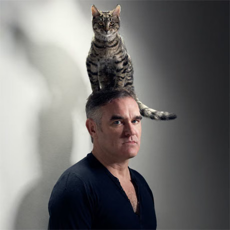
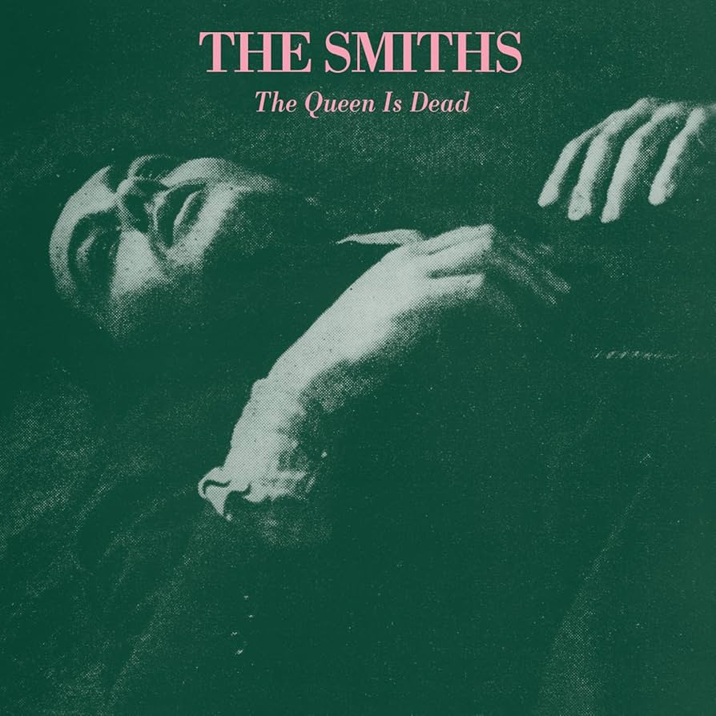

Hello, World.
Does the mind rule the body or does the body rule the mind? I dunno.
“Hey, Buddy! I'm speaking in an accent beyond her range of hearing!„
-Stephen Merchant as Wheatley, Portal 2


This is Button Patrick Buttonnissey. Press him to view an example of this css library's usecase.
Click me oh oh oh click me